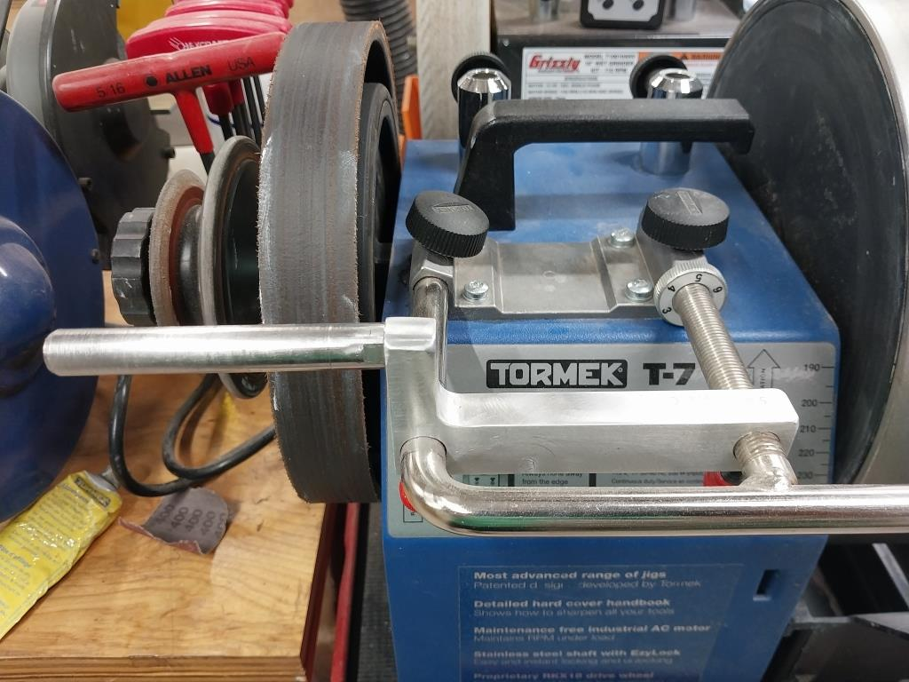

|
|
|
Honing Support Bar |

Honing Support Bar
Brad Winesett posted pictures on the AAW Forum of a secondary bar he added to the USB which makes honing easier.
Brad noted that the vertical distance from the centerline of the auxiliary to the centerline of the USB is 1.27 inches.
After making one, I was reminded that it can only be used when sharpening from the horizontal position. When using the vertical, the honing wheel is rotating towards you and this can't be used.
|  |

|
Click on any of these pictures to see a larger version of that picture